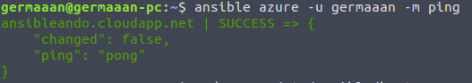
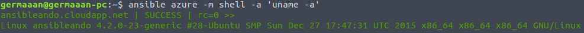
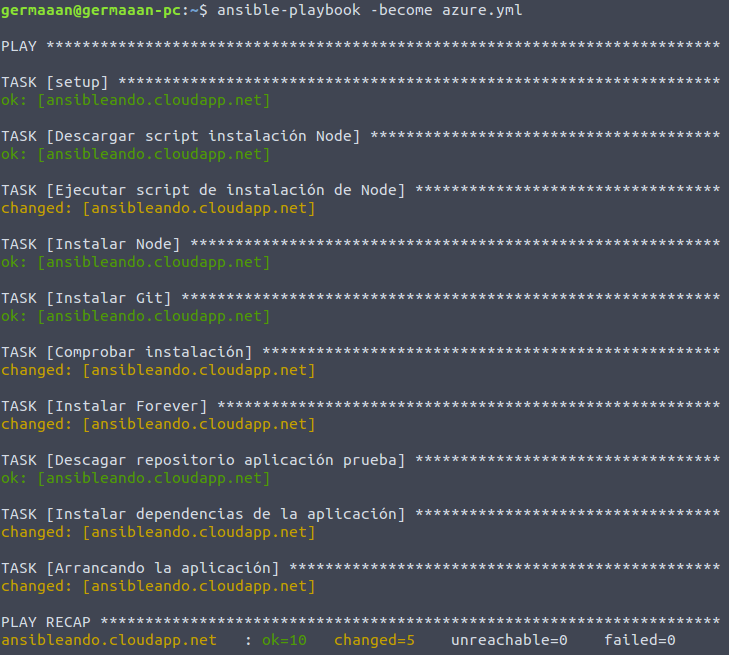
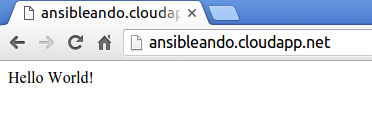

Provisionando...ando
"Como desplegar mi infraestructura virtual con el mínimo calentamiento de cabeza"
Germán Martínez Maldonado
(
@germaaan / @germaaan_)
Oficina de Software Libre de la Universidad de Granada
(@OSLUGR / @SoftwareLibreUGR)


Mi infraestructura virtual, mi tesoro

Y tú, ¿de cuál eres?


Vale, pero perder horas configurando servidores... ¿es que no lo puede hacer otro?

Ansible

Ansible es un motor de orquestación, una herramienta que nos permite aplicar configuraciones en infraestructuras remotas de forma automática.

Provisionar un servidor
- Seleccionar la máquina
- Instalar el software necesario
- Configurar el sistema
- Desplegar el software propio
¿Así que Ansible hace todo por mi?

Características de Ansible
- Creado en 2012
- Desarrollado en Python
- Configuración de tareas mediante YAML ( Playbook)
- Método de autenticación por ssh
- No necesita usuario root
¿Pero es que solo existe Ansible para provisionar?
No, pero es el más comodo
Chef / Puppet
- Necesitan de un agente instalado en el objetivo
- Configuración más complicada
- Modo pull / modo push
Vale, empiezo a entender el asunto, ¿pero dónde puedo usarlo?
En cualquier sitio:
- Servidores
- Contenedores
- Ordenadores corrientes
Ahora sí, comencemos a ver como se usa
sudo apt-get install software-properties-common
sudo apt-add-repository ppa:ansible/ansible
sudo apt-get update sudo apt-get install ansible
Inventario
/etc/ansible/hosts
perro.ejemplo.com ansible_ssh_host=192.168.1.34
gato.ejemplo.com ansible_port=5555 ansible_host=192.168.1.43
[servidores]
xenial.primero.com
wily.segundo.com
[bbdd]
replica[0:3].cuarto.com
[local]
servidores bbdd
[servidores:vars]
ansible_ssh_user: "ralf"
ansible_ssh_pass: "guantes" # NO RECOMENDABLE
Módulos
complementos para realizar tareas simples
Listado completoSistema
- command
- cron
- mount
- ping
- script
- shell
- service
Instalación
- package
- apt
- pacman
- yum
- easy_install
Archivos
- copy
- file
- find
- replace
Infraestructura
- git
- azure
- django_manage
- docker / docker_image
- lxc_container
Bases de datos
- MongoDB
- MySQL
- Postgres
- Redis
Vamos a jugar a juego
Usando "playbooks"
---
- hosts: servidores
sudo: yes
tasks:
- name: Actualizar lista de paquetes
apt: update_cache=yes
- name: Instalar Git
apt: name=git state=present
Ejemplo en Azure
Provisionamiento en (casi) 5 pasos
Paso 1: Copiar clave privada al servidor
ssh-copy-id -i ~/.ssh/id_rsa.pub germaaan@ansibleando.cloudapp.net
Paso 2: Crear archivo de inventario
# sudo nano /etc/ansible/hosts
[azure]
ansibleando.cloudapp.net
Paso 3: Exportar variable de entorno con la ruta del archivo de inventario
export ANSIBLE_HOSTS=/etc/ansible/hosts
Paso 4: Probar conexión con ping
ansible azure -u germaaan -m ping

Opcional: Ejecutar algo remotamente
ansible azure -m shell -a 'uname -a'

Paso 5: Crear la jugada
---
- hosts: azure
remote_user: germaaan
tasks:
- name: Descargar script instalación Node
get_url: url=https://deb.nodesource.com/setup_4.x dest=./setup_4.x mode=0550
- name: Ejecutar script de instalación de Node
command: ./setup_4.x
- name: Instalar Node
apt: name=nodejs state=present
- name: Instalar Git
apt: name=git state=present
- name: Comprobar instalación
command: node -v
- name: Instalar Forever
command: npm install -g forever
- name: Descargar repositorio aplicación prueba
git: repo=https://github.com/heroku/node-js-sample.git dest=./node-js-sample
- name: Instalar dependencias de la aplicación
command: chdir=node-js-sample npm install
- name: Arrancando la aplicación
command: chdir=node-js-sample forever start ./index.js
Paso 5b (FINAL): Hacer la jugada
ansible-playbook -become azure.yml

FUNCIONA!
Me has convencido, ¿dónde más puedo usarlo?
Vagrant
Vagrant.configure("2") do |config|
config.vm.box = "ubuntu"
config.vm.network :private_network, ip: "192.168.2.50"
config.vm.provision "ansible" do |ansible|
ansible.playbook = "playbook.yml"
end
end